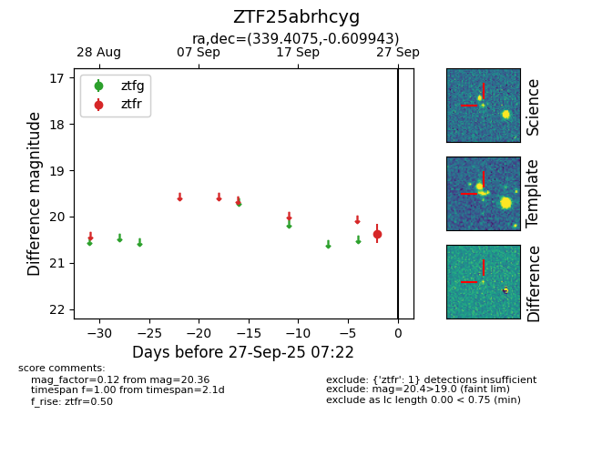

FINK: ZTF25abrhcyg
Lasair: ZTF25abrhcyg
ALeRCE: ZTF25abrhcyg
ZTF25abrhcyg (ztf,fink)
equatorial (ra, dec) = (339.4075,-0.60994)
galactic (l, b) = (66.8719,-48.36325)

last ztfr=20.36
1 ztfr detections